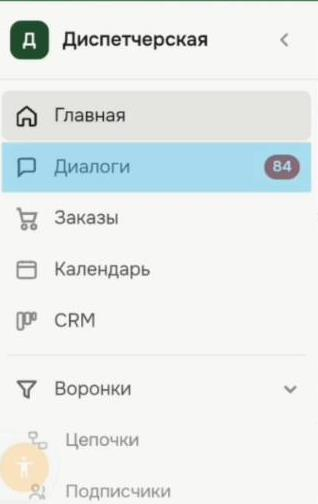

Внутренняя CRM · 2026
Диспетчерская Алины
Нутрициолог ведёт переписку с клиентами, заказы магазина и цепочки сообщений в одном окне.

Задача
Алине нужно видеть, кому ещё предстоит ответить в Telegram и какие заказы ждут обработки.
Что я сделал
Собрал рабочее место с диалогами, календарём и CRM. Подключил магазин с товарами и конструктором смузи, цепочки сообщений и уведомления на телефон.
Результат
С телефона Алина может перейти от переписки к заказам и отгрузкам, а уведомления помогают заметить новое обращение.
Технологии
Python, FastAPI, PostgreSQL, Telegram-боты и PWA с push-уведомлениями